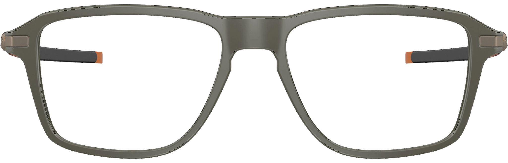
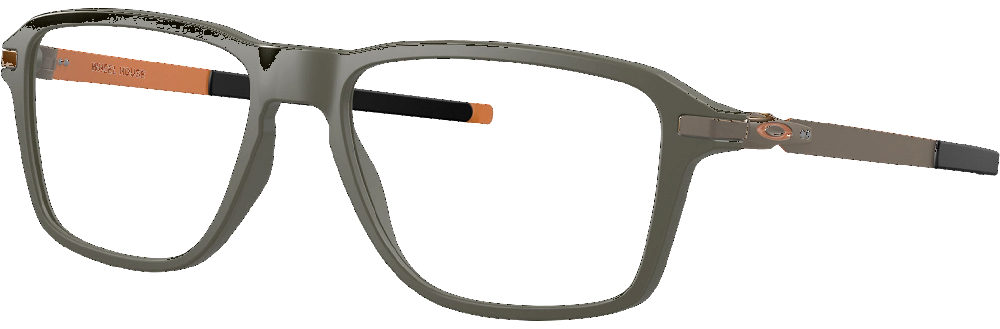

WHEEL HOUSE · WHEEL HOUSE · WHEEL HOUSE ·
OAKLEY · OAKLEY · OAKLEY · OAKLEY ·
WHEEL HOUSE · WHEEL HOUSE · WHEEL HOUSE ·


NEW IN STORE
WHEEL HOUSE
Oakley OX8166 · Matte Olive
WHEEL HOUSE
OAKLEY
× HOYA
THE LENS
HOYA SYNC III
For 2+ hours of screen time a day
THE COATING
HI-VISION LONGLIFE
BLUECONTROL
Neutralises the blue light emitted by digital screens
OX8166 · Wheel House
NEW IN STORE
OAKLEY OX8166 · HOYA SYNC III